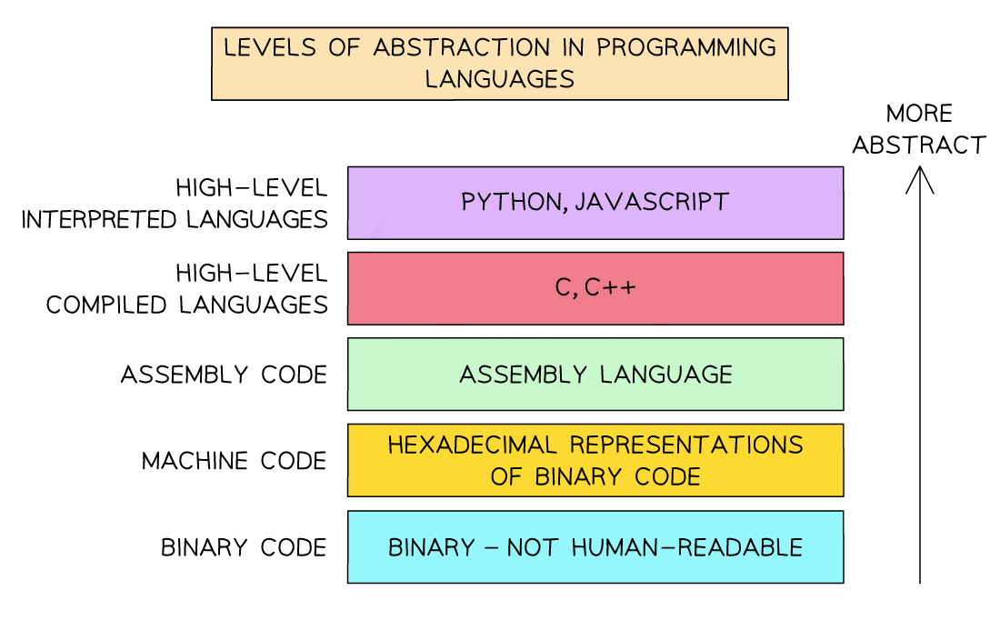
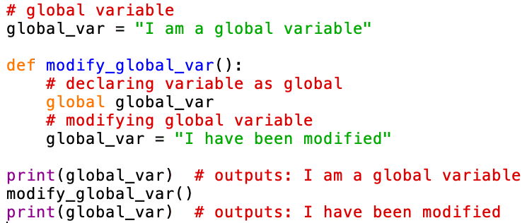
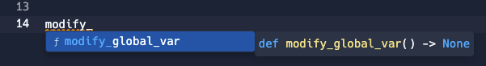
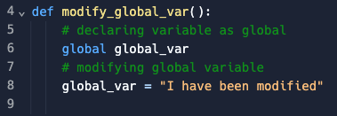

Translator Types
What is a translator?
- A translator is a program that translates program source code into machine code so that it can executed directly by a processor
- Low-level languages such as assembly code are translated using an assembler
- High-level languages such as Python are translated using a compiler or interpreter
Assembler, compiler, interpreter
What is an assembler?
- An assembler translates mnemonics written in assembly language (low-level) in to machine code
- Each lime of assembly language is assembled into a single machine code instruction
- Assemblers have been used less and less since high-level languages were introduced
| Advantages | Disadvantages |
|---|---|
| Speed of execution | Difficult to write due to limited and hard to understand commands |
| Optimises the code | Changes mean it must be reassembled |
| Original source code will not be seen | Designed solely for one specific processor |
What is a compiler?
- A compiler translates high-level languages into machine code all in one go
- Compilers translate inputs into machine code directly
- Compilers are generally used when a program is finished and has been checked for syntax errors
- Compiled code can be distributed (creates an executable) and run without the need for translation software
- If compiled code contains any errors, after fixing, it will need re-compiling
| Advantages | Disadvantages |
|---|---|
| Speed of execution | Can be memory intensive |
| Optimises the code | Difficult to debug |
| Original source code will not be seen | Changes mean it must be recompiled |
| It is designed solely for one specific processor |
What is an interpreter?
- An interpreter translates high-level languages into machine code one line at a time
- Each line is executed after translation and if any errors are found, the process stops
- Interpreters do not generate machine code directly, appropriate machine code subroutines are called
- Interpreters are generally used when a program is being written in the development stage
- Interpreted code is more difficult to distribute as translation software is needed for it to run
| Advantages | Disadvantages |
|---|---|
| Stops when it finds a specific syntax error in the code | Slower execution |
| Easier to debug | Every time the program is run it has to be translated |
| Require less RAM to process the code | Executed as is, no optimisation |

Compiler vs interpreter
| Aspect | Compiler | Interpreter |
|---|---|---|
| Software needed by user | End users only need the executable file, not the compiler – so there’s no extra cost or setup | End users need an interpreter or compiler to translate and run the source code – may involve setup or cost |
| Access to source code | Users do not receive the source code, so they can’t modify or extend the program | Users receive the full source code, making it easier to modify or extend the program themselves |
| Control and monetisation | Developers keep control of the code and can charge for upgrades or customisations | Developers lose control over their code, making it harder to monetise upgrades or prevent copying |
| Speed of execution | Compiled programs run faster, as translation is done in advance and optimised machine code is used | Interpreted programs run slower, since each line is translated every time it runs |
| Error handling | Compiled programs don’t run until all syntax and semantic errors are fixed | Errors are caught one line at a time, making it easier for the developer to test and fix during development |
| Portability | Compiled code can be run on different machines, regardless of where it was compiled | Interpreted programs must be interpreted on the same type of machine – less portable |
| Debugging experience | More difficult to test sections – developers need to write special routines to check partial results | Developers can view partial results as they go, making it easier to test, debug, and refine ideas |
| Crash risk | Untested compiled programs may crash the system if run with errors | Interpreted programs are safer during testing – errors are caught before the system can crash |
| User independence | Users are reliant on the developer for updates or modifications – they can’t edit the code themselves | Users have full access to code and libraries, giving them freedom to customise or fix the |
Mixed mode translation
What is mixed mode translation?
- Mixed mode translation combines features of both a compiler and an interpreter
- Instead of fully compiling or interpreting the code, the program is partially compiled into an intermediate form, which is then interpreted at runtime
- It works by:
- The source code is compiled into intermediate code, not full machine code
- This intermediate code (e.g. bytecode) is interpreted by a virtual machine (e.g. the Java Virtual Machine – JVM)
- Optionally, some parts may later be just-in-time (JIT) compiled into machine code for better performance
- Java uses mixed mode translation:
- Java source code is compiled to bytecode (.class file)
- Bytecode is interpreted (or JIT compiled) by the JVM on any platform
| Feature | Compiler | Interpreter | Mixed mode translation |
|---|---|---|---|
| Translation | Entire program at once | One line at a time | Compiles to intermediate code |
| Speed of execution | Fastest (fully compiled) | Slowest | Medium (JIT makes it faster over time) |
| Portability | Not portable | Not portable | Highly portable (across platforms) |
| Errors shown | After full compilation | One at a time | During compile or runtime |
| Requires runtime system | No | Yes | Yes (e.g. JVM) |
| Example languages | C, C++ | Python, JavaScript | Java, C# (with.NET CLR) |
Jennifer uses an Integrated Development Environment (IDE) to write her computer program. The IDE allows Jennifer to use both an interpreter and a compiler while creating her computer program. Describe the ways in which Jennifer can use both a compiler and an interpreter while developing the program.[4] Answer Interpreter:
- Use an interpreter while writing the program [1 mark]
- … to test/debug the partially completed program [1 mark]
-
… because errors can be corrected and processing continue from where the execution stopped // errors can be corrected in real time // errors are identified one at a time [1 mark] Compiler:
-
Use the compiler after the program is complete [1 mark]
- … to create an executable file [1 mark]
- Use the compiler to repeatedly test the same (completed) section [1 mark]
- … without having to re-interpret every time // compiler not needed at runtime [1 mark]
Development Tools
What is an IDE?
- An Integrated Development Environment (IDE) is a software tool that provides programmers with a comprehensive and integrated platform to write, edit, compile, debug, and manage their code efficiently
- IDEs are designed to streamline the software development process by offering a wide range of features and tools that can help programmers
- IDEs can be an app to download or can be web-based
IDE features
Syntax highlighting (pretty printing)
- IDEs use syntax highlighting to visually distinguish different elements of code based on their syntax
- The IDE assigns distinct colours or styles to keywords, strings, comments, variables, functions, and other language constructs
- Syntax highlighting helps programmers quickly identify and differentiate code components, reducing the chance of syntax errors and improving code comprehension
- In this example Python code, you can see that the code comments are displayed in red, the strings are displayed in green and the print commands are displayed in purple

Syntax highlighting in an IDE
Autocomplete
- Autocomplete will suggest code completions as programmers type
- For example, as developers start typing a variable, function, or method name, the IDE displays a list of available options
- Another example is when programmers use opening brackets and the autocomplete facility will automatically add closing brackets
- Code completion improves productivity by reducing typing effort and preventing typing errors and naming inconsistencies
- IDEs can automatically correct common mistakes or typing errors made during coding. When an error-prone sequence is detected, the IDE can suggest a correction, helping developers fix minor errors as they type their code

Code completion in an IDE
Auto indent
- Auto indent will automatically indent the programming code when you start a new line of code within a code block
- They are commonly used in selection and iteration programming constructs
-
In the example below, the indentation is automatic after starting to define the code block on line 04 and is clearly marked to show which lines of code are included within the block.

Code formatting with automatic indentation -
Comments are lines of text within the code that are not executed but serve as documentation and explanations for programmers
- IDEs enable developers to add single-line or multi-line comments to describe the code’s purpose, algorithmic steps, and any relevant information that will be useful to the maintenance of the program
- Comments enhance code understanding, making it easier for developers to revisit and modify code at a later stage
- Comments are in green on the image above
- IDEs can automatically highlight syntax errors in the code editor as developers type
- This feature helps catch mistakes instantly, allowing programmers to address syntax-related issues promptly
- Syntax errors are highlighted with distinct colours, making them easily noticeable, even before executing the code
Variable watch window
- The watch window is a debugging tool that allows developers to monitor the values of specific variables during runtime
- Developers can add variables to the watch window and observe their values change as the program executes
- This tool is particularly valuable for understanding how variables evolve throughout the program’s execution and diagnosing issues related to variable values
Breakpoints
- Breakpoints are markers that developers canset at specific lines of code to halt program execution during runtime
- When the program reaches a breakpoint, it pauses, allowing developers to inspect the program’s state and variable values and identify the cause of potential bugs
- Breakpoints provide a controlled way to analyse code step-by-step
- The error message list displays a collection of errors, warnings, and messages generated during the compilation and execution of the program
- IDEs present detailed error descriptions and relevant code locations, enabling programmers to address and correct issues systematically
Stepping mode
- Stepping mode is a debugging mode that allows developers to execute the program one line at a time
- Developers can choose between different step options, such as step into, step over, and step out, to examine function calls and control flow
- Step mode offers a granular view of the program’s execution, making it easier to identify the exact location of potential bugs
Crash dump/post-mortem report
- When a program crashes, IDEs can generate a crash dump or post-mortem report
- This report captures the program’s state and memory contents at the time of the crash, helping developers diagnose the root cause of the crash after the program has terminated unexpectedly
Stack contents
- The stack contents tool allows developers to inspect the contents of the program’s call stack during debugging
- It shows the order in which functions were called and the parameters and local variables of each function
-
Understanding the call stack, aids in understanding the program’s flow and diagnosing issues related to function calls Identify two debugging tools that a typical IDE can provide.[2] Answer e.g.
-
Breakpoints [1 mark]
- Single stepping [1 mark]
- Report windows [1 mark]